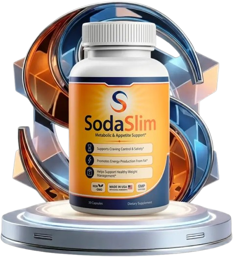

SodaSlim™ – 30-Day Supply, Daily weight-management and wellness Support.
SodaSlim is a daily dietary supplement created for adults in the USA who want nutritional support as part of a healthy weight-management and wellness routine. Maintaining a healthy weight involves several everyday factors, including balanced nutrition, regular physical activity, hydration, adequate sleep, and consistent lifestyle habits. SodaSlim is intended to complement these practices rather than replace them.
SodaSlim focuses on areas commonly associated with weight-management wellness, including normal metabolism, daily energy, and appetite awareness. Its formula combines botanical extracts and nutritional ingredients that are commonly used in dietary supplements focused on metabolic and weight wellness. When included in a consistent routine, SodaSlim can provide convenient nutritional support alongside sensible food choices and regular movement.
| Detail | Value |
|---|---|
| Supply Per Bottle | 30 days |
| Supplement Type | Adults |
| Supplement Type | Daily dietary supplement |
| Primary Focus | Weight-management and wellness support |
| Lifestyle Support | Nutrition, activity, hydration, and healthy routines |
| Key Support Areas | Metabolism, appetite, energy, and daily wellness |
Take SodaSlim according to the serving directions provided on the product label. Following the recommended amount each day can make the supplement easier to include in a consistent weight-management and wellness routine. Taking it according to the product directions and maintaining regular use can help keep supplementation organized. Do not exceed the recommended serving unless advised by a qualified healthcare professional.
For broader weight-management and metabolic wellness, use SodaSlim alongside balanced meals, regular physical activity, adequate hydration, and sufficient sleep. These lifestyle factors remain important parts of maintaining overall wellness and supporting healthy weight goals. Individual experiences may differ depending on nutrition, activity levels, sleep, metabolism, age, and other personal factors.
SodaSlim is intended for adults and should be used according to the directions provided on the product label. Review the supplement facts, ingredients, and usage instructions before taking it, and do not exceed the recommended daily serving. Because SodaSlim contains caffeine anhydrous, individuals who are sensitive to caffeine should consider their total daily caffeine intake.
Anyone with an existing medical condition, taking prescription or over-the-counter medication, pregnant or nursing, sensitive to caffeine, or receiving ongoing medical care should consult a qualified healthcare professional before starting SodaSlim. Dietary supplements should not be used as a substitute for prescribed treatment, balanced nutrition, regular physical activity, or professional medical advice.
According to the supplied product information, eligible SodaSlim purchases include a 60-day money-back guarantee. This provides customers with a period to evaluate the product as part of their daily wellness routine. Customers in the USA should review the current refund policy, return requirements, eligibility conditions, and instructions provided through the official website before making a purchase.
What is SodaSlim?
SodaSlim is a daily dietary supplement intended to complement healthy weight-management goals, normal metabolism, daily energy, and appetite awareness. It combines botanical extracts and nutritional ingredients that can be included as part of a balanced lifestyle.
How does SodaSlim work?
SodaSlim provides botanical and nutritional ingredients commonly associated with metabolic wellness, weight-management routines, appetite awareness, and daily energy. It is intended to complement the body's normal processes and healthy lifestyle habits rather than replace balanced nutrition or regular physical activity.
Who can use SodaSlim?
SodaSlim is intended for adults in the USA who want nutritional support as part of a healthy weight-management and wellness routine. Anyone with a medical condition, taking medication, pregnant or nursing, or sensitive to caffeine should speak with a qualified healthcare professional before using a new dietary supplement.
How should I take SodaSlim?
Use SodaSlim according to the serving instructions listed on the product packaging. Following the recommended directions can make it easier to incorporate the supplement into a regular wellness routine. Do not take more than the recommended amount.
How long does it take to notice results from SodaSlim?
Individual experiences with dietary supplements can vary. Nutrition, physical activity, sleep, age, metabolism, and other lifestyle factors can influence how a person experiences a weight-management supplement. SodaSlim should be used consistently according to its label directions rather than with an expectation of a guaranteed timeframe.
Can SodaSlim be used every day?
SodaSlim is presented as a daily dietary supplement for adults. Follow the serving instructions provided on the product label and avoid exceeding the recommended amount. Consistent use can be included within a broader routine involving balanced nutrition, regular movement, hydration, and adequate sleep.
Does SodaSlim support weight management?
SodaSlim is intended to complement healthy weight-management routines. Ingredients such as Green Tea Extract, Green Coffee Bean Extract, and Garcinia Cambogia Extract are commonly included in dietary supplements focused on metabolic and weight wellness. SodaSlim is not intended to diagnose, treat, cure, or prevent any disease.
What ingredients are found in SodaSlim?
The supplied SodaSlim information lists Green Tea Extract, Green Coffee Bean Extract, Garcinia Cambogia Extract, Raspberry Ketones, and Caffeine Anhydrous. These ingredients are included to provide botanical and nutritional support associated with metabolism, daily energy, appetite awareness, and weight-management routines.
Is SodaSlim suitable for men and women?
SodaSlim is presented as a general adult dietary supplement rather than a product intended for one gender. Adult men and women interested in nutritional support for weight-management and everyday wellness may consider it as part of a healthy routine. Anyone with medical concerns should consult a healthcare professional before use.
Can I take SodaSlim with a healthy lifestyle?
Yes. SodaSlim is intended to complement healthy lifestyle habits rather than replace them. Balanced meals, regular physical activity, sufficient hydration, quality sleep, and consistent daily habits remain important when working toward healthy weight and metabolic wellness goals.
Where can I buy SodaSlim in the USA?
SodaSlim is available through the official website for USA customers. Reviewing the official product information before ordering can help you understand the current formula, ingredients, serving directions, package options, and applicable purchase policies.
Does SodaSlim include a money-back guarantee?
The supplied product information states that eligible SodaSlim purchases are covered by a 60-day money-back guarantee. Customers should review the current official refund terms, return conditions, and eligibility requirements before making a purchase.